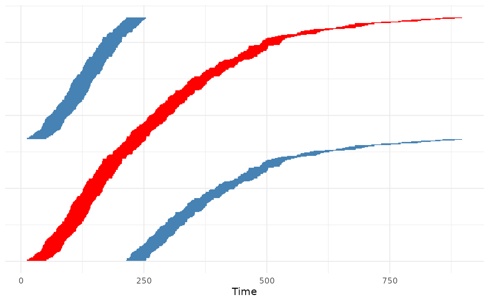
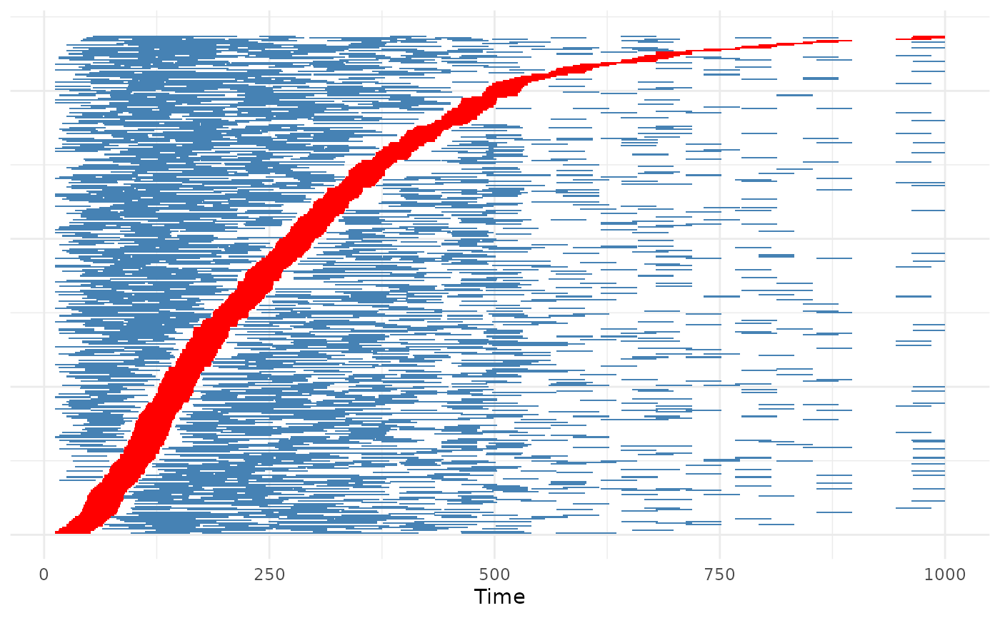

Plot a SPMD object
plot.SPMD.RdThis function visualizes the time used for the estimation in a symmetric pair matching design. It does so by plotting one row per person, where the time used as control and the time under exposure is colored differently. Time that was not used is white. Individuals are sorted by their first exposure.
Usage
# S3 method for class 'SPMD'
plot(x, show_events=FALSE, fill_control="steelblue",
fill_exposed="red", event_size=1, event_shape=8,
event_color="black", xlab="Time", ...)Arguments
- x
A
SPMDobject created using thesym_pair_matchingfunction.- show_events
Either
TRUEorFALSE, indicating whether a dot for each observed event should be added to the plot.- fill_control
A single character string, specifying the color that should be used for times used as control.
- fill_exposed
A single character string, specifying the color that should be used for exposure times.
- event_size
A single number, specifying the size of the event indicators when using
show_events=TRUE.- event_shape
A single number, specifying the shape of the event indicators when using
show_events=TRUE.- event_color
A single character string, specifying the color of the event indicators when using
show_events=TRUE.- xlab
A single character string, giving the x-axis title.
- ...
Currently not used.
Details
This function may be used to visually investigate exposure trends, and control time distributions. It may be particularly valuable when using pairs="random1" or pairs="random2".
Examples
library(ggplot2)
library(data.table)
#>
#> Attaching package: ‘data.table’
#> The following object is masked from ‘package:base’:
#>
#> %notin%
library(SPMD)
set.seed(1234)
data <- sim_example_data(n=500, rr=3)
# using each person in one match
out <- sym_pair_matching(Surv(start, stop, Y) ~ A, data=data, id=".id",
risk_period=40, pairs="one", estimator="moments")
plot(out)

# using each person in multiple match
out <- sym_pair_matching(Surv(start, stop, Y) ~ A, data=data, id=".id",
risk_period=40, pairs="random2", estimator="moments",
n_pairs=2000)
plot(out)

# using all possible and valid match
out <- sym_pair_matching(Surv(start, stop, Y) ~ A, data=data, id=".id",
risk_period=40, pairs="all", estimator="moments")
plot(out)